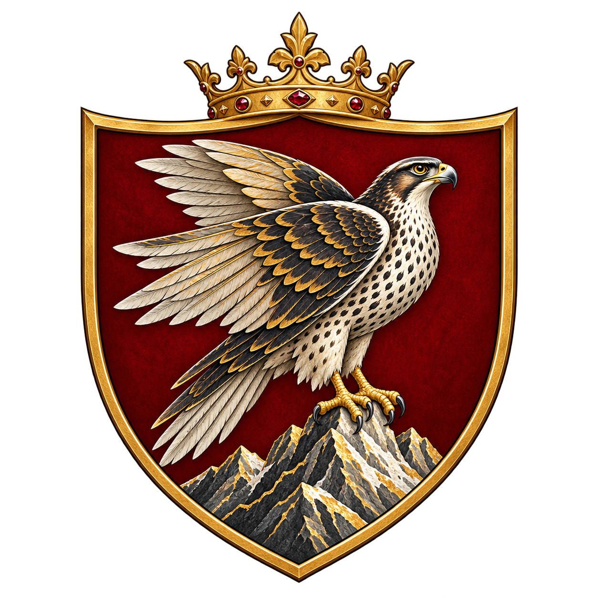
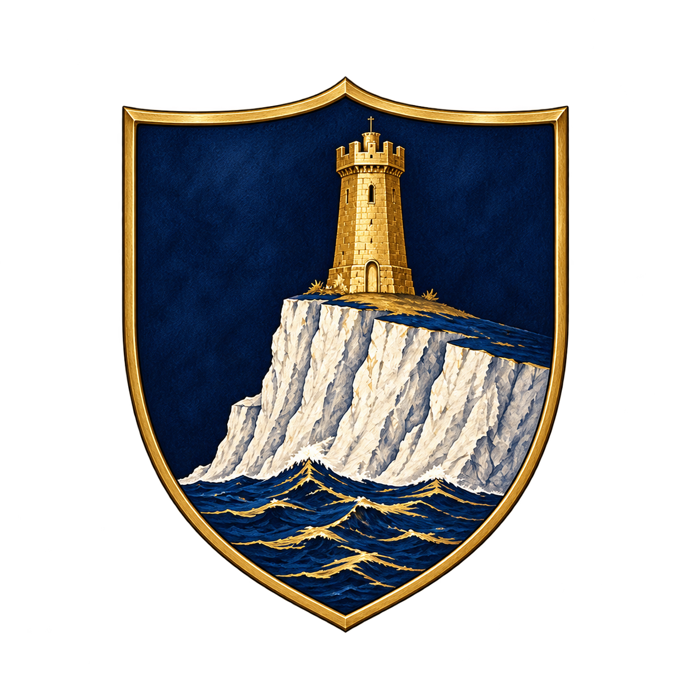

1
Approved Falkenrath · Upload 1Permanent approved original · Falkenrath simplified heraldic shield

327D88CA-D496-4379-BFE6-F7C3344D9C27.pngOpen original ↗Four user-approved simplified shields in the original identification order, now showing the subsequently approved Volkov replacement in position 3. These are seals derived from existing full heraldic achievements, not replacements for the full formal arms.

327D88CA-D496-4379-BFE6-F7C3344D9C27.pngOpen original ↗
37B0202E-7CF9-4798-95B3-988FC1E279EC.pngOpen original ↗
A2C3CBAF-6A51-4A3F-A396-A7D9184A00DE.pngOpen original ↗
ADA756D0-67B1-4F7B-B3AE-35AD19316C75.pngOpen original ↗